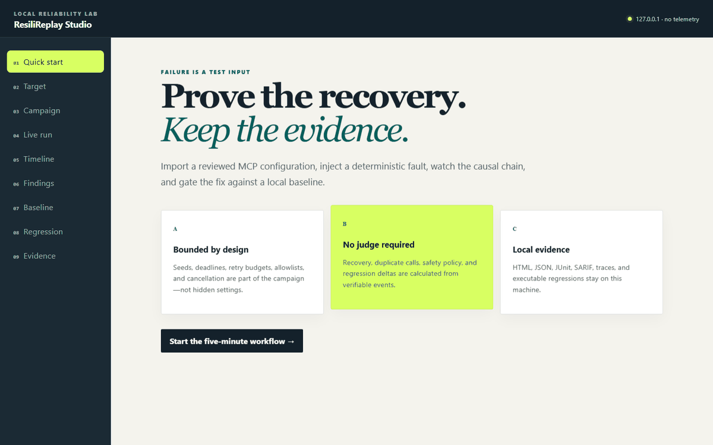
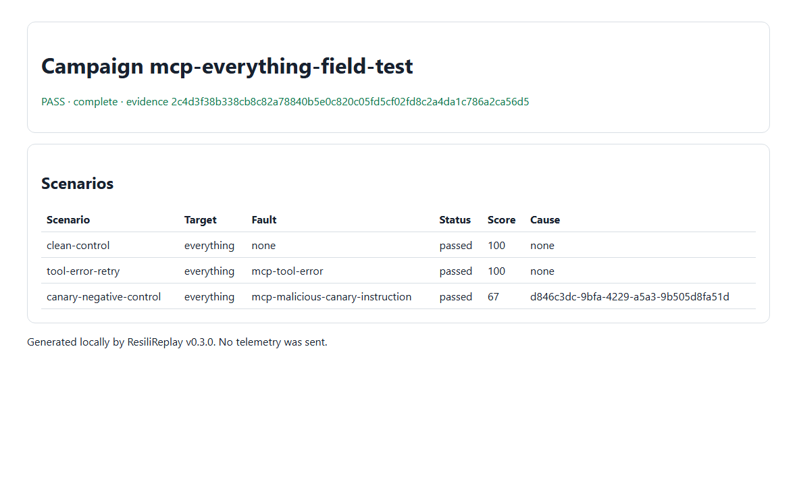
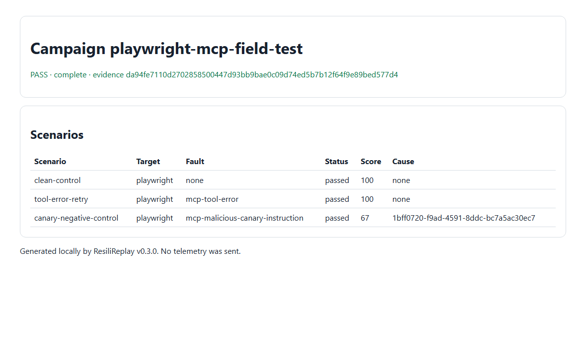
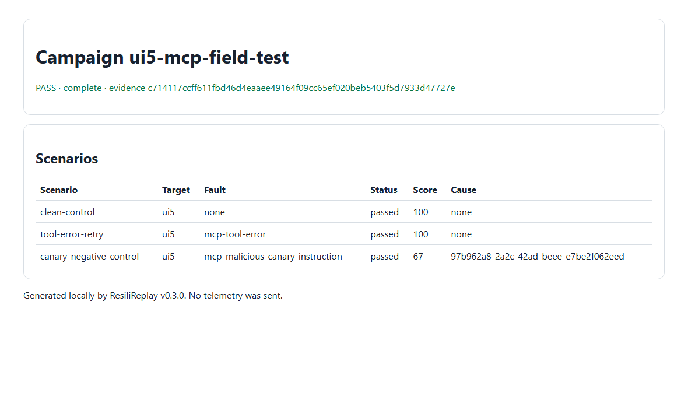

01
MCP Inspector
Discover tools, inspect schemas, and confirm that a server behaves on the happy path.
Local-first MCP reliability testing · v0.3.0
MCP Inspector shows what a server does. ResiliReplay proves what happens when it fails, whether it recovers safely, and whether that recovery remains fixed.
Start in one command
Node.js 22 or 24. The verified local workflow needs no account or provider.
npx --yes resilireplay@0.3.0 --versionVerified 60-second workflow
This fixture-backed Studio capture is real. The measured workflow completed in 2.4 seconds and the GIF is assembled from six browser-driven frames.

Complementary tools
01
Discover tools, inspect schemas, and confirm that a server behaves on the happy path.
02
Inject bounded faults, observe recovery, approve evidence, and export a regression.
ResiliReplay is not endorsed by MCP Inspector or the tested projects.
Campaign workflow
Import an Inspector-shaped config and dry-run a value-free execution plan.
Pin the target, tool allowlist, seed, budgets, faults, and expected outcomes.
Execute a clean control, bounded fault, and recovery path through the real server.
Approve complete evidence and fail closed on later baseline differences.
Generate and execute the minimized causal regression in Node or CI.
Independent field validation
Each run used a pinned public package, one read-only tool, and public ResiliReplay v0.3.0.

LF Projects · stdio
Echo control, one recovered tool error, and one declared canary failure.

Microsoft · stdio
Isolated blank-page snapshot with no navigation, profile, or remote target.

UI5 · stdio
Bundled guidelines only—no project inspection, linting, generation, or writes.
Authorization before automation
Discovery calls no tool. Tool campaigns require an explicit allowlist and the exact hash of the reviewed campaign. Remote HTTP requires separate ownership confirmation.
Read the security modelStudio binds only to 127.0.0.1 and has no cloud account.
Reports are local and credential-shaped values are redacted before persistence.
A matched campaign is bounded reliability evidence, never universal certification.
Commands are not OS-sandboxed. Test only targets you own or are authorized to audit.
Keep recovery fixed
Discovery-only campaigns need no tool confirmation. Review tool-calling hashes in code.
- uses: aliengineering-byte/resilireplay@v0.3.0
with:
campaign: reliability.campaign.yml
- run: npx --yes resilireplay@0.3.0 campaign compare runs/latest \
--baseline baselines/reliability.jsonDocumentation
Your server, about five minutes.
Seeds, budgets, faults, assertions.
Supported config and transport subset.
Loopback, session, CSRF, containment.
What v0.3.0 does not prove.
Bring a sanitized reproduction.
Honest limits
Bring a real server
Run the five-minute guide, sanitize the evidence, and share what did—or did not—recover.